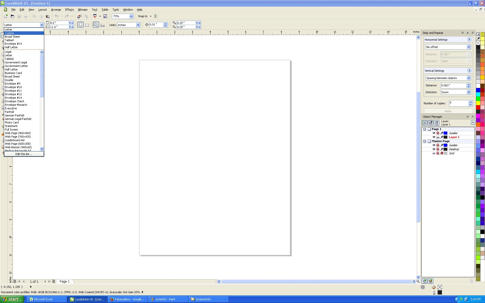

The result of my selection is displayed immediately.
Week 2 & Week 3: computer-aided design, computer controlled cutting
I did not get as far as I would have liked. Part of this week was downloading CAD packages from Autodesk and Dassault Systems (Solidworks). The trouble I was having was that Autodesk had us register but did not have the download available in time. Solidworks was available, but I was a little lost. I went to the Fablab at LCCC where they had a Solidworks seat all set up. I experimented with Solidworks and it took me a while to get familiar with the application. I did manage to export to a DXF file and then use CorelDraw 5 to output the work to the benchtop laser cutter.
CorelDraw:
Here I type up a simple text and make a vinyl self-apply sign.
First set up the page to match my stock:
Next I pick a font to cut:

Next I type out the text and play with fonts:
The
result of my selection is displayed immediately.
Next, I make final choices on font and get ready to print:

Next I get the stock width, exactly, from the Roland vinyl cutter and print:
Printing is straight forward using Roland print driver. After the printer cuts the vinyl, it is time to weed. I liked using my Leatherman tool more so than the Exacto knife at the LCCC Lab.

After weeding, we apply mask tape.